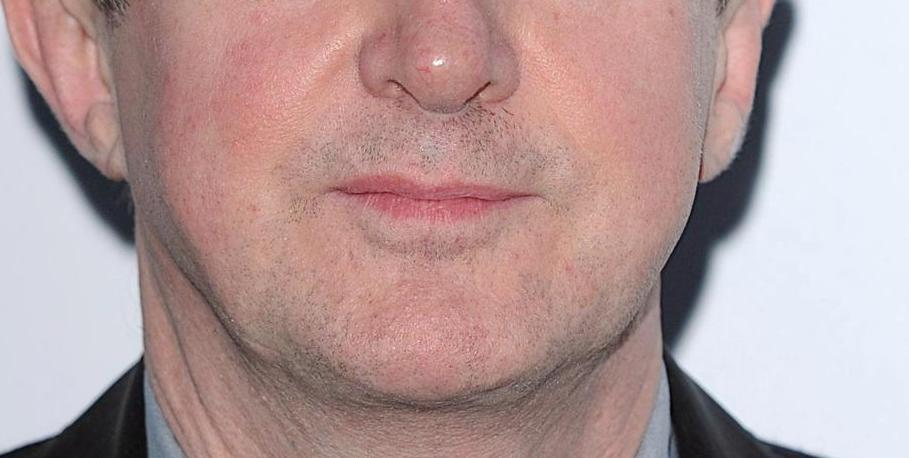

ふるさとの歌唱(本番)
この実験では，あなたに日本の童謡「ふるさと」を歌っていただきます．このページは本番です．以下の説明を読んでスタートボタンを押し，実験を開始してください．
- このページの一番下にカメラの映像が映し出されています．下の写真のように鼻と口がカメラに収まるようにカメラの位置を調整してください．目より上の部分を含める必要はありません． 
- スマートフォンを固定して実験中にカメラが動かないようにしてください．
- スタートボタンを押すと3秒間のカウントダウンが始まります．カウントダウンが0になると，演奏が始まりますので，演奏に合わせて歌詞を歌ってください．カラオケのように，下の楽譜の歌うべき場所が赤く表示されます．
- 歌が終わると自動的にページが移動しますので，指示に従って次の実験を行ってください．